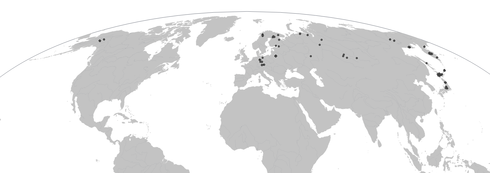

Maho Inoue井上 真帆
Institute of Botany and Landscape Ecology, University of Greifswald · Postdoctoral Researcher
Research · Diphasiastrum · Field
Maps & fieldwork photos
Sampling sites of Diphasiastrum complanatum
This map shows the sampling locations of D. complanatum used in our ongoing biogeographic study, spanning a broad range across the Northern Hemisphere.

The samples used in this study were obtained through multiple sources, including:
- Fieldwork conducted by the authors
- Herbarium specimens from institutional collections
- Samples generously provided by collaborating researchers
Each sample source is properly acknowledged in the metadata and, where relevant, in the associated publication. All samples were used in accordance with the terms agreed upon with the original collectors or institutions.
← back to Research — Club mosses (Diphasiastrum, Lycopodiaceae)